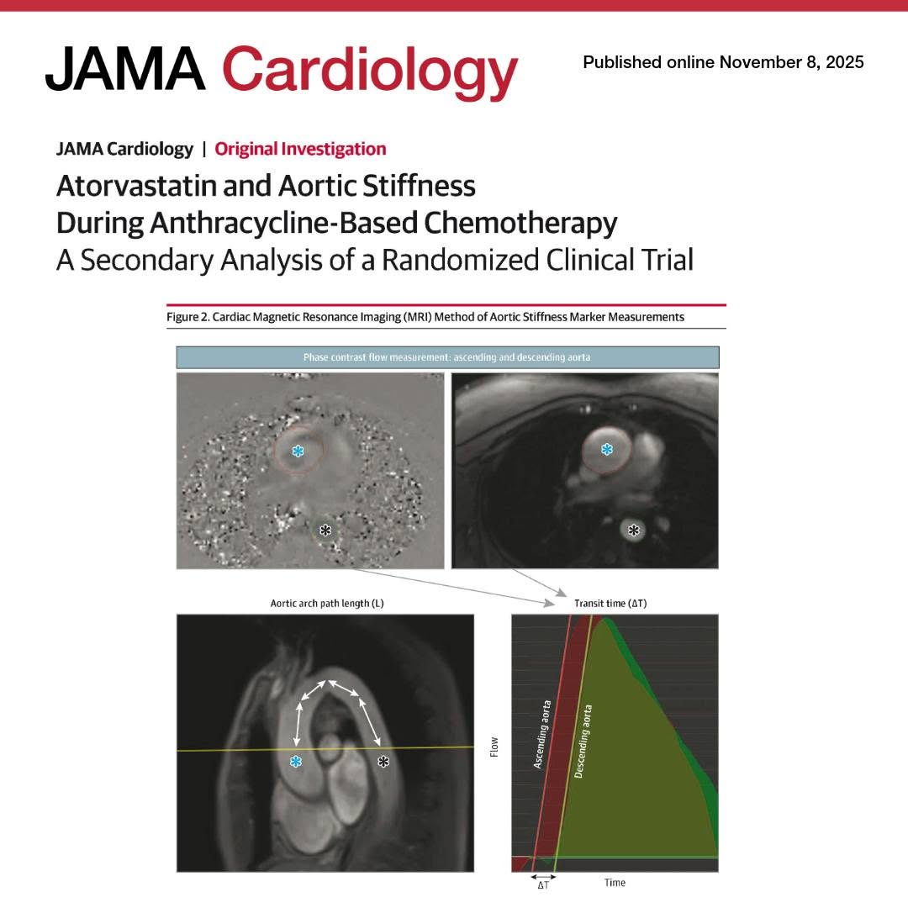

Statins have pleiotropic effects that go way beyond just lowering LDL.
The anti-inflammatory and antifibrotic effects may play a role in protecting against CVD… and might be useful in preventing or treating other diseases. Crohn’s is a good example.
Louis shares a study suggesting statin use is associated with lower risk of intestinal strictures in Crohn's, illustrating anti-inflammatory and antifibrotic pleiotropy.
Statins have pleiotropic effects that go way beyond just lowering LDL.
The anti-inflammatory and antifibrotic effects may play a role in protecting against CVD… and might be useful in preventing or treating other diseases. Crohn’s is a good example.
New research indicates that statin use is associated with a significantly lower risk of developing intestinal strictures in patients with Crohn’s disease. The study suggests that the anti-inflammatory and antifibrotic properties of statins may help prevent the structural damage that often leads to surgical intervention. Statins May Lower Risk for Strictures in Crohn’s Disease (Medscape)

Louis highlights a JAMA Cardiology trial in which atorvastatin before and during anthracycline chemotherapy led to fewer cases of elevated pulse wave velocity and less aortic distensibility loss than placebo, illustrating statin effects beyond LDL.
Louis shares a Substack about a 2004 pomegranate study, calling the author eccentric but saying pomegranate polyphenols look promising. He proposes telomerase activation as a mechanism and notes larger trials were never done.
Louis notes that the latest American College of Cardiology scientific statement recommends measuring and treating hsCRP and points out that statins do this effectively. He reshares a 2022 meta-analysis of 26 RCTs showing statins lowered hs-CRP and CRP in patients with CVD.

Louis quotes a review stating that besides lowering LDL-C, statins have non-lipid effects such as improved endothelial function, reduced oxidative stress and atherosclerotic plaque stabilization. It is a useful overview of why statin benefit may extend beyond LDL lowering.
Louis explains that Lp-PLA2 reflects inflammation inside atherosclerotic plaque (unlike systemic hsCRP) and is recognised as a CVD risk factor. A quoted review reports pravastatin, atorvastatin, rosuvastatin and simvastatin significantly lower it, with ezetimibe added lowering it further.
Louis explains why patients are immediately given atorvastatin 80 mg after a heart attack: PROVE IT-TIMI 22 showed an almost 30% reduction in death, repeat heart attack or rehospitalization within 30 days versus a lower-potency statin. The speed suggests pleiotropic effects (anti-inflammatory, plaque and endothelial stabilizing) rather than LDL lowering. Lipophilic statins at maximum dose work best in this setting.